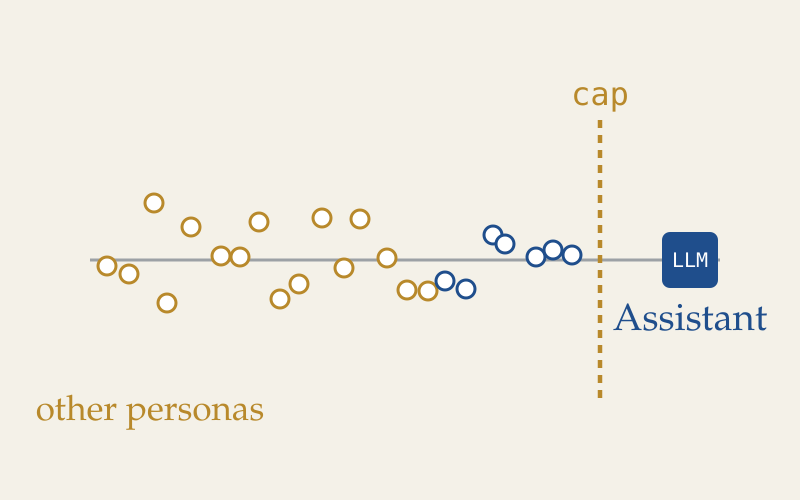

DataWorks, AI Interpretability Lab
I lead an AI interpretability lab inside UC San Diego's student data science organization. We are working through Anthropic's The Assistant Axis, which finds a single direction in a language model's activations that tracks how much it is acting as its helpful Assistant persona, and shows that capping drift along it roughly halves harmful responses.
Read the paper →